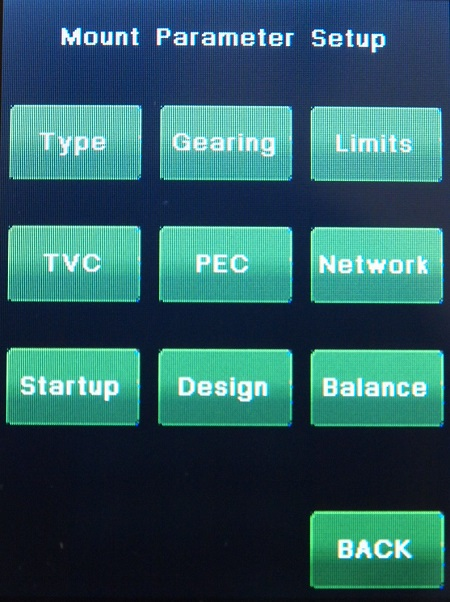

| Interactive Hand-Controller Menus - click on green button to Navigate |
|
 |
This menu provides access to all the mount parameters.
Type - select your mount type. Gearing - if you have a custom mount this is where you can set your custom gear ratios. Limits - Set mount safety limits. TVC - Configure Dec backlash compensation. PEC - Compensate for periodic error of the worm gear. Network - Configure network settings for the Ethernet PC connection. Startup - Select the default mount startup mode. Design - Chose between ALT/AZ Mount type and an Equatorial Mount. Balance - Helps to detect mount imbalance by measuring motor load |